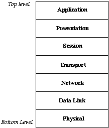

2. The OSI 7 Layers Model
- The OSI is a model defined by ISO, which splits the network to 7 layers.
- Each of the layers should need to communicate only with the layer above it and the layer below it, through well defined interfaces
- That way it should be possible to replace each layer implementation with a different implementation, with no need to modify any additional network component
- The OSI model defines only the role each layer should perform in the network.
- Here is a diagram of the OSI model:
